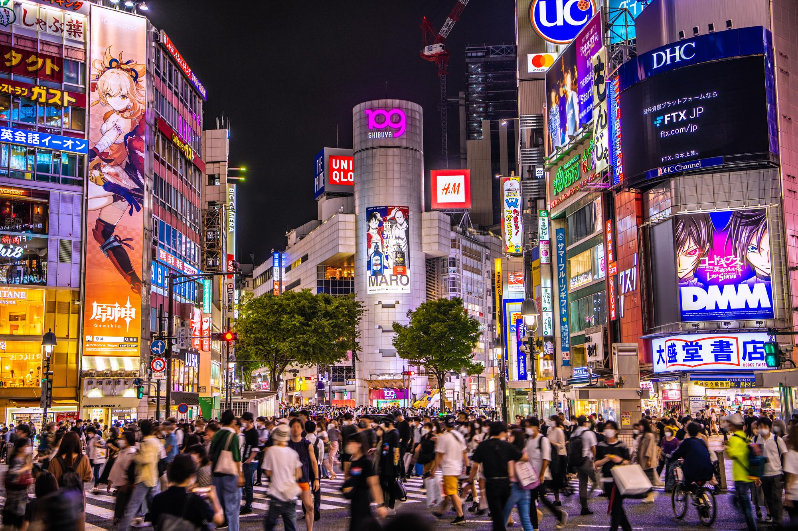
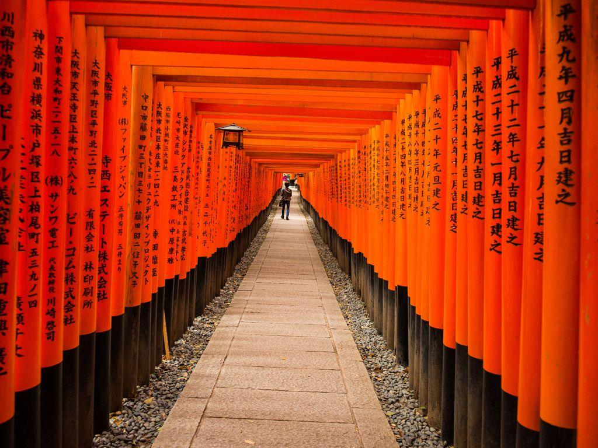
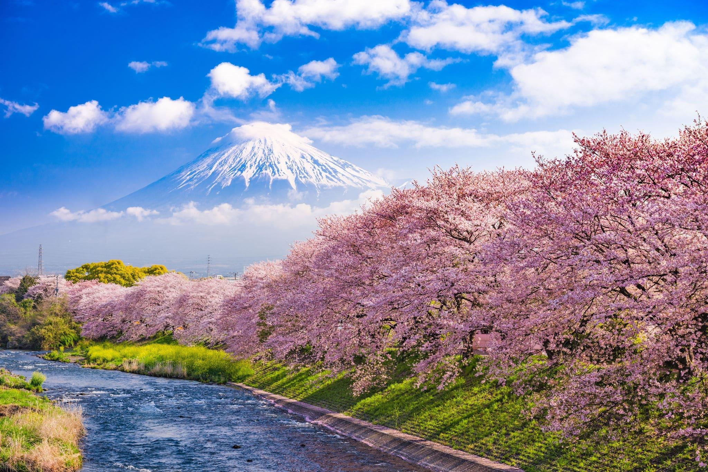
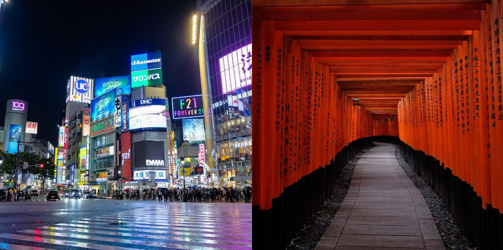

Страна цветущей сакуры, традиций и волшебных городов
Япония — удивительная страна, где современные технологии сочетаются с древними традициями. Особенно хочется увидеть цветение сакуры, красивые храмы, яркие улицы и величественные горы.
Моё путешествие мечты включает три прекрасных места: Токио, Киото и гору Фудзи.

Токио — столица Японии и один из самых современных городов мира. Здесь находятся огромные торговые центры, необычные кафе и красивые небоскрёбы.
Я бы хотела посетить район Сибуя, прогуляться по Акихабаре, попробовать японские сладости и увидеть ночной город.

Киото известен своими старинными храмами, садами и традиционной архитектурой.
Особенно хочется увидеть красные ворота тории, прогуляться среди цветущей сакуры и познакомиться с японской культурой.
↑ Наверх
Фудзи — самая высокая гора Японии и один из главных символов страны.
Я мечтаю увидеть её своими глазами, сделать фотографии и насладиться красивыми природными пейзажами.
↑ НаверхНажмите на левую или правую часть изображения, чтобы перейти к интересующему месту.

Левая половина — Токио, правая половина — Киото.
↑ НаверхУзнать больше о Японии можно на официальном туристическом сайте Японии .